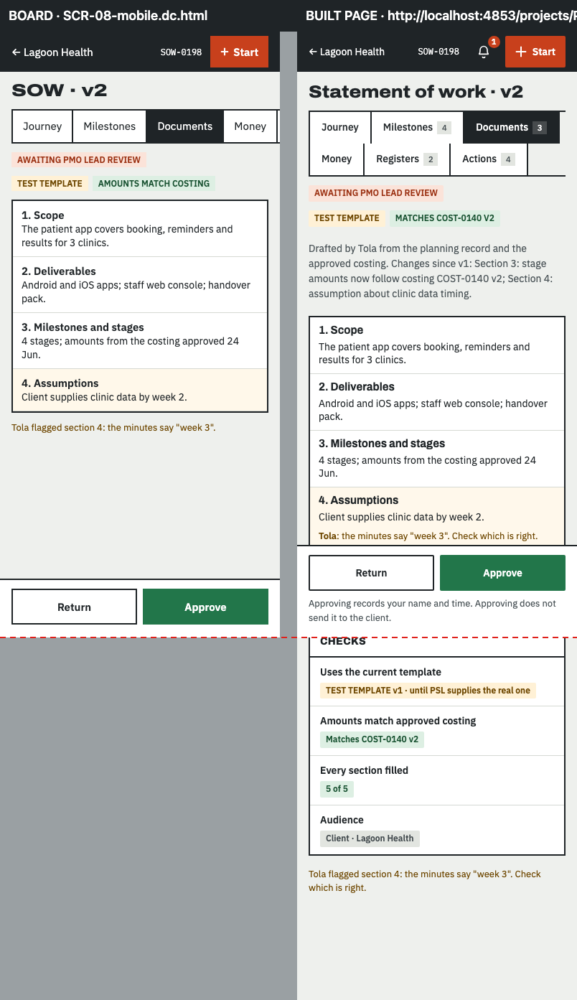
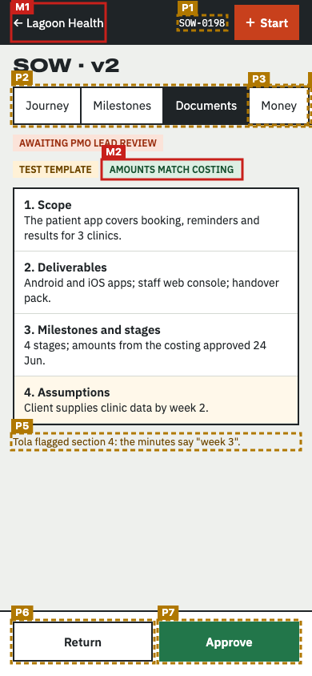
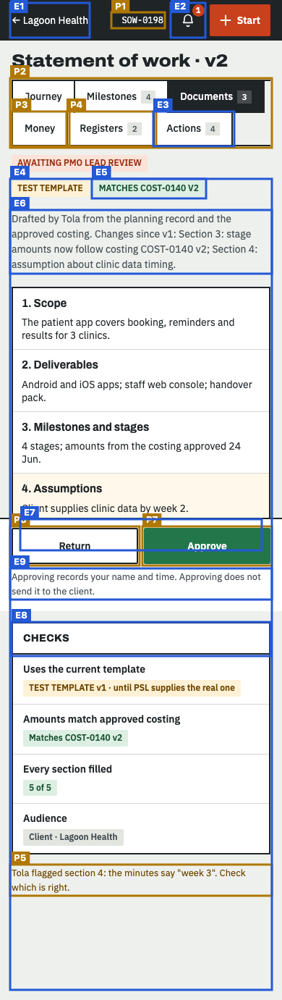
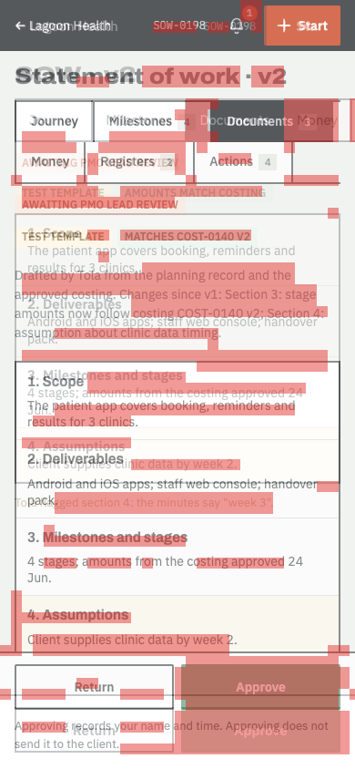

Does the built page follow the design?
Board SCR-08-mobile.dc.html compared with http://localhost:4851/projects/P-0102/documents/D-2901?v=2 at 390px wide · 2026-11-17T17:54:02.263Z
- Every board item is on the page or approved as an exception (100%).
- Visual match 69.3 is below 90.
- 7 item(s) are in a different place; review them (not part of the pass rule unless --strict-position).
22 of 24 things drawn on the board were found on the page: headings, buttons, links, search and filter controls, table columns, labels and the repeated rows (counted once, not per row).
How closely the shapes line up: blocks, bars, tables and text areas, compared in 12px squares over the top 844px. Different words in the same place still count as a match, so sample data does not lower the score.
Missing from the built page 2
Drawn on the board but not found on the page. Each one must be built, or approved as an exception.
| # | What | Text on the board | Where on the board | Exception |
|---|---|---|---|---|
| M1 | Link | ← Lagoon Health | left, 6px down | approved Conflicts 9: the shared phone bar names the way back 'Back to <project>' (shell, D-99); the visible text is '← <project>'. · design engineer, 17 Nov 2026 — D-111 |
| M2 | Text | AMOUNTS MATCH COSTING | middle, 201px down | approved Conflicts 7: the phone tag shows the backend's own text for the amounts check (e.g. 'MATCHES COST-0140 V2'), never a sentence built in the browser. · design engineer, 17 Nov 2026 — D-111 |
In a different place 7
Found on both, but in a different order, side of the page, or area (for example inside the table frame instead of above it).
| # | What | How it moved |
|---|---|---|
| P1 | Text SOW-0198 |
|
| P2 | Tabs Project |
|
| P3 | Tab Money |
|
| P4 | Tab Registers |
|
| P5 | Text Tola flagged section 4: the minutes say "week 3". |
|
| P6 | Link Return |
|
| P7 | Link Approve |
|
Looks different 8
Found on both, but styled differently: table rows and cells, fonts, colours, underlines, outlines, corners. Not part of the score; check each one against the board.
| What | Difference |
|---|---|
| Link "Start" |
|
| Heading "SOW · v2" |
|
| Text "1. Scope" |
|
| Text "2. Deliverables" |
|
| Text "3. Milestones and stages" |
|
| Text "4. Assumptions" |
|
| Link "Return" |
|
| Link "Approve" |
|
On the page but not on the board 9
Built but not drawn. Some are expected (data, status lines); the rest need the design engineer to approve or remove them.
| # | What | Text on the page | Where on the page |
|---|---|---|---|
| E1 | Link | Back to Lagoon Health | left, 6px down |
| E2 | Button | Alerts, 1 unread | right, 6px down |
| E3 | Tab | Actions 4 | right, 156px down |
| E4 | tabpanel | Documents | middle, 249px down |
| E5 | Text | MATCHES COST-0140 V2 | middle, 249px down |
| E6 | Text | Drafted by Tola from the planning record and the approved costing. Changes since v1: Section 3: stage amounts now follow costing COST-0140 v2; Section 4: assumption about clinic data timing. | middle, 292px down |
| E7 | Text | Tola (agent note) : the minutes say "week 3". Check which is right. Minutes MIN-0141 | middle, 719px down |
| E8 | Heading | CHECKS | middle, 861px down |
| E9 | Text | Approving records your name and time. Approving does not send it to the client. | middle, 787px down |
Pictures
The red dashed line on the side-by-side marks how far down the visual score looks. On the marked board, red boxes are missing items (M). On the marked page, amber boxes moved (P) and blue boxes are extra (E). In the difference picture both screens are laid over each other and red squares are where the shapes do not line up.






Notes about this run
- Images: /_blob/ images are served from /Users/Hunchoo/psl-factory-worktrees/f-29/design/mascots/canvas-assets.json (19 mapped).
Found on both (22)
| Text | SOW-0198 | |
| Link | Start | page: Start work |
| Heading | SOW · v2 | page: Statement of work · v2 |
| Tabs | Project | |
| Tab | Journey | |
| Tab | Milestones | page: Milestones 4 |
| Tab | Documents | page: Documents 3 |
| Tab | Money | |
| Tab | Registers | page: Registers 2 |
| Text | AWAITING PMO LEAD REVIEW | |
| Text | TEST TEMPLATE | |
| Text | 1. Scope | |
| Text | The patient app covers booking, reminders and results for 3 clinics. | |
| Text | 2. Deliverables | |
| Text | Android and iOS apps; staff web console; handover pack. | |
| Text | 3. Milestones and stages | |
| Text | 4 stages; amounts from the costing approved 24 Jun. | |
| Text | 4. Assumptions | |
| Text | Client supplies clinic data by week 2. | |
| Text | Tola flagged section 4: the minutes say "week 3". | page: Tola flagged section 4: the minutes say "week 3". Check which is right. |
| Link | Return | |
| Link | Approve |
How the scores are worked out
Element coverage. The board is drawn locally from its own template and sample data. From the drawn board the check lists everything a person sees or uses: page areas (navigation, main, search), headings, links, buttons, form fields with their labels, table column headers, filter, search and pagination controls and fixed labels. Rows drawn from sample data count once, as a pattern ("table rows with these columns"). Each item is looked for on the page by its kind and its words (ignoring capitals, curly quotes and small wording differences, at least 80% similar). Coverage is found ÷ drawn. Order is compared in reading order (top to bottom, left to right); an item is "moved" when it breaks the order, sits on the other side of the page, or sits inside a different area.
Visual match. Both full-page screenshots are compared in 12px squares after a light blur, over the board's height (844px; the page is 1381px). Only squares with something in them count. A square matches when its colours line up, or when both have text or lines there. Score = matching ÷ counted squares (1559 of 2251). Over every square including empty background it would be 70.4.
Technical details
Board file: /Users/Hunchoo/psl-factory-worktrees/f-29/design/canvas/project/SCR-08-mobile.dc.html
Viewport: 390×844
Report data: report.json
Exceptions file: /Users/Hunchoo/psl-factory/delivery/features/F-29/fidelity-exceptions.json